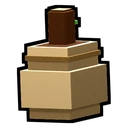
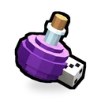
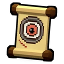

Food and boosts
Food and boosts are what you carry into a run: food in the food slot, and boosts in their own slots.
Food
| Food | Heals | When at or below | Slot holds |
|---|---|---|---|
 Minor Healing Potion Minor Healing Potion | 10 | 50% | 3 |
 Guppy Stew Guppy Stew | 5 | 50% | 3 |
 Carrot Stew Carrot Stew | 10 | 50% | 3 |
 Trout Pie Trout Pie | 12 | 50% | 3 |
 Worm Steak Worm Steak | 14 | 50% | 3 |
 Slime Broth Slime Broth | 8 | 50% | 3 |
 Royal Slime Broth Royal Slime Broth | 12 | 50% | 3 |
 Emergency Ration Emergency Ration | 45 | 10% | 1 |
 Trail Mix Trail Mix | 4 | 80% | 6 |
Boosts
| Boost | Slot | Slot holds |
|---|---|---|
 Fertiliser Fertiliser | Fertiliser | 100 |
 Rich Compost Rich Compost | Fertiliser | 100 |
 Super Compost Super Compost | Fertiliser | 100 |
 Woodcutter's Compost | Fertiliser | 100 |
 Miner's Compost Miner's Compost | Fertiliser | 100 |
 Angler's Compost Angler's Compost | Fertiliser | 100 |
 Farmer's Compost Farmer's Compost | Fertiliser | 100 |
 Warden's Seal Warden's Seal | Seal | 100 |
 Treasure Seal Treasure Seal | Seal | 100 |
 Rugged Satchel Rugged Satchel | Bag | 100 |
 Slime Bag Slime Bag | Bag | 100 |
 Provisions Pouch Provisions Pouch | Bag | 100 |
 Bandage Roll Bandage Roll | Aid | 100 |
 Draught of Fury Draught of Fury | Aid | 100 |
 Ironbark Tonic Ironbark Tonic | Aid | 100 |
 Hunter's Brew Hunter's Brew | Aid | 100 |
 Scholar's Tea Scholar's Tea | Aid | 100 |
 Gilded Draught Gilded Draught | Aid | 100 |
 Gambler's Brew | Aid | 100 |
 Fields Chart Fields Chart | Map | 100 |
 Camp Chart Camp Chart | Map | 100 |
 Town Chart Town Chart | Map | 100 |
 Cyclops Chart | Map | 100 |
 Cultist Chart Cultist Chart | Map | 100 |
 Dump Chart Dump Chart | Map | 100 |
 Grotto Chart Grotto Chart | Map | 100 |
 Bowl Chart Bowl Chart | Map | 100 |
 Storm Chart Storm Chart | Map | 100 |
 Pyramid Chart Pyramid Chart | Map | 100 |
 Cave Chart Cave Chart | Map | 100 |
 Pet Zombie Pet Zombie | Pet | 1 |
 Pet Bandit Pet Bandit | Pet | 1 |
 Pet Cultist Pet Cultist | Pet | 1 |
 Pet Entling Pet Entling | Pet | 1 |
 Cubey Cubey | Pet | 1 |
 Little Slime King Little Slime King | Pet | 1 |
 Little Cyclops Little Cyclops | Pet | 1 |
 Little Garbage Man Little Garbage Man | Pet | 1 |
 Little Sarcophagus Little Sarcophagus | Pet | 1 |
 Little Golem Little Golem | Pet | 1 |
 Desert Orb Desert Orb | Quest | 1 |
 The Old Man's Chain The Old Man's Chain | Quest | 1 |
Tonics
- Draught of Fury: 6% chance a hit deals 50% more
- Ironbark Tonic: 7% chance to halve a hit you take
- Hunter's Brew: +20% damage against champions
- Scholar's Tea: +15% experience
- Gilded Draught: +8% coins
- Gambler's Brew: 2% chance a kill drops its loot twice